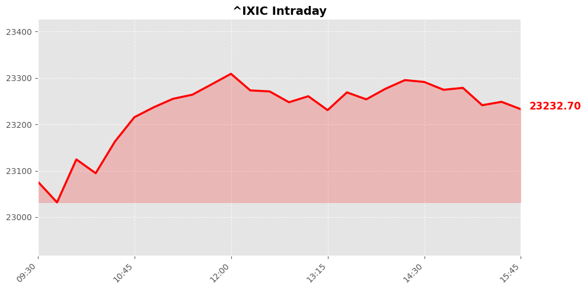
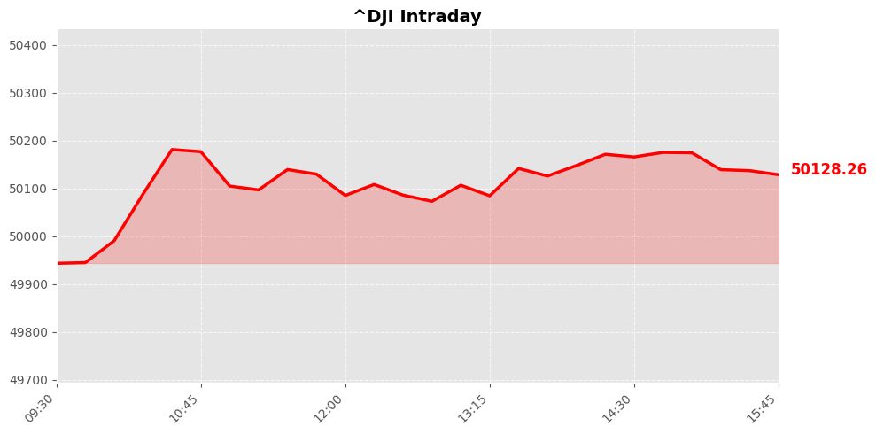
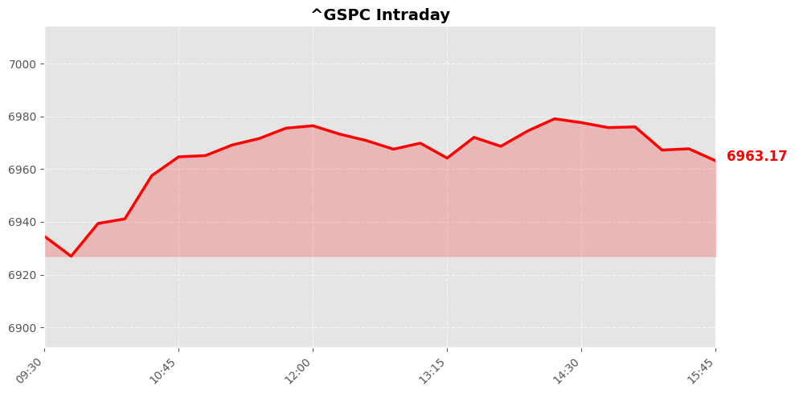

Daily Market Briefing
Market Overview



Market Analysis
The recent trading session indicates a cautiously optimistic tone across major U.S. equity indices. The NASDAQ Composite led the gains with a solid rise of approximately 0.9%, closing at 23,238.67. This momentum suggests continued investor confidence in the technology and growth sectors, likely fueled by positive earnings reports, innovative advancements, or easing concerns over regulatory pressures in some tech segments. The NASDAQ’s impressive uptick reflects strong appetite for risk assets, especially among retail and institutional investors seeking growth opportunities.
Meanwhile, the Dow Jones Industrial Average experienced a modest increase of 0.04%, ending at 50,135.87. The Dow’s relatively flat performance signals a cautious stance among investors towards traditional industrial and manufacturing sectors, possibly due to lingering supply chain issues, inflationary pressures, or geopolitical uncertainties. This divergence between the Dow and NASDAQ suggests a rotation within the market, favoring growth stocks over more cyclical or value-oriented sectors.
The S&P 500’s gain of approximately 0.47% to 6,964.82 underscores a balanced sentiment, with broad participation across sectors. The index's positive movement indicates that investors remain generally confident in the economic outlook, supported by resilient corporate earnings, accommodative monetary policy, and positive macroeconomic data.
Overall, the market sentiment appears cautiously optimistic, with tech-driven sectors leading the charge while traditional industries maintain stability. Investors seem to be balancing optimism about economic growth with concerns over inflation and geopolitical risks. As such, the market remains sensitive to macroeconomic developments, with a potential for continued volatility amid evolving global and domestic factors.
Today's Headlines
News Analysis
Certainly! Here's a professional yet accessible analysis of today's financial news, focusing on key market points, potential impact factors, and industry trends:
Main Market Focus Points:
-
Upcoming U.S. Employment and Inflation Data
Investors are closely watching this week’s reports on employment figures and consumer prices, which are critical indicators for the Federal Reserve’s monetary policy. The data will influence expectations around potential interest rate adjustments this year, impacting sectors sensitive to interest rates such as financials and technology. -
Housing Market Deterioration
With over 1 million homeowners underwater on their mortgages—reaching a seven-year high—the housing sector faces increasing stress. This situation could dampen housing-related stocks and mortgage-backed securities, signaling potential weakness in the real estate market if home price declines continue. -
Tech and AI Sector Outlook
Despite prevailing fears of an AI bubble, recent analyses suggest that valuations in the tech sector, particularly AI-related stocks, are not excessively stretched relative to historical averages. Morgan Stanley’s recommendation to buy beaten-down software stocks indicates ongoing opportunities in the technological innovation space, especially as AI-driven spending benefits select companies. -
Consumer Staples and Market Rotation
Procter & Gamble’s strong start to the year underscores the resilience of consumer staples amidst market rotation. Improving fundamentals and market shifts towards value stocks might sustain demand for such companies, providing stability in an otherwise volatile environment. -
Market Valuation and Sentiment
While the overall stock market appears somewhat expensive, recent data shows that tech sector valuations are relatively modest compared to historical norms. Additionally, fears of an AI-related tech bubble may be overblown, which could mitigate some concerns over overvaluation in the broader market.
Potential Market Impact Factors:
- Economic Data Releases: The upcoming employment and inflation reports are set to be market movers, influencing the Fed’s interest rate outlook and investor risk appetite.
- Housing Market Pressures: Rising mortgage delinquencies and underwater homeowners could lead to increased foreclosures or reduced consumer spending, impacting both residential real estate and related financial sectors.
- Geopolitical and Policy Developments: Developments such as Japan’s elections and China’s efforts to divest U.S. assets reignite concerns about dollar strength and U.S.-international relations, possibly causing forex volatility.
- Technological Innovation and AI: Continued investment in AI-related sectors, supported by strong earnings and strategic recommendations, could bolster technology stocks despite broader valuation concerns.
Industry Trends Worth Noting:
- Resilience of Consumer Staples: Companies like Procter & Gamble demonstrate that fundamentals and market rotation can sustain growth even amid economic uncertainties.
- AI and Tech Investment: The ongoing capital inflows into AI and related technologies highlight a long-term trend towards digital transformation, with implications for semiconductor, software, and cloud service providers.
- Housing and Financial Stability Risks: Elevated mortgage distress suggests a potential slowdown in housing and financial markets, emphasizing the need for cautious positioning in these sectors.
- Geopolitical Impact on Currency Markets: Political developments and international asset reallocations are influencing the dollar, which could have ripple effects across global markets.
In summary, the market is at a nuanced crossroads, balancing promising opportunities in technology and consumer sectors against macroeconomic and geopolitical risks. Staying attentive to economic indicators and geopolitical developments will be key for strategic positioning.
Economic Indicators
Inflation Indicators
Employment Indicators
Consumer Indicators
Community Hot Stocks
| Rank | Symbol | Mentions | Source |
|---|---|---|---|
| 1 | HIMS | 108 | |
| 2 | MU | 62 | |
| 3 | MSFT | 46 | |
| 4 | CARE | 37 | |
| 5 | HIT | 37 | |
| 6 | NVDA | 35 | |
| 7 | LUCK | 35 | |
| 8 | BOND | 32 | |
| 9 | DRUG | 31 | |
| 10 | HOOD | 28 | |
| 11 | NET | 28 | |
| 12 | PUMP | 27 | |
| 13 | RDDT | 26 | |
| 14 | FACT | 25 | |
| 15 | FAST | 24 | |
| 16 | BULL | 24 | |
| 17 | MIND | 24 | |
| 18 | LOAN | 23 | |
| 19 | SAFE | 21 | |
| 20 | GROW | 21 |
Market Outlook
The recent market performance indicates a cautiously optimistic tone, with the NASDAQ leading the gains at +0.9%, reflecting investor confidence in technology and growth sectors. The S&P 500's moderate increase of +0.47% and the Dow's minimal rise of +0.04% suggest a balanced sentiment, potentially driven by mixed macroeconomic signals and ongoing political developments.
Key drivers for the upcoming trading days will be the upcoming U.S. employment data and inflation indicators. Investors are closely watching whether job creation remains resilient and if inflationary pressures are truly easing. Should these indicators confirm a slowdown, markets could sustain their upward trajectory, particularly benefiting growth-oriented sectors like technology and software, as highlighted by Morgan Stanley's recent bullish outlook on beaten-down software stocks.
However, risks remain palpable. The high level of mortgage underwater homeowners signals ongoing economic stress, which could impact consumer spending and financial stability. Political developments, such as Tulsi Gabbard's Senate testimony amid election probe concerns, could introduce volatility depending on the narrative and outcomes. Additionally, broader geopolitical or macroeconomic shocks, such as surprises in employment or inflation data, could trigger short-term corrections.
Investors should focus on key economic releases and political news as indicators of market momentum. Maintaining a balanced approach—favoring sectors with strong fundamentals while remaining cautious of macro risks—will be prudent. In the near term, expect the market to remain sensitive to data releases, with potential for continued moderate gains if economic signals remain supportive, but with a vigilant eye on downside risks that could lead to brief pullbacks.
Follow Us

Scan to follow StockGate
For more US stock market insights